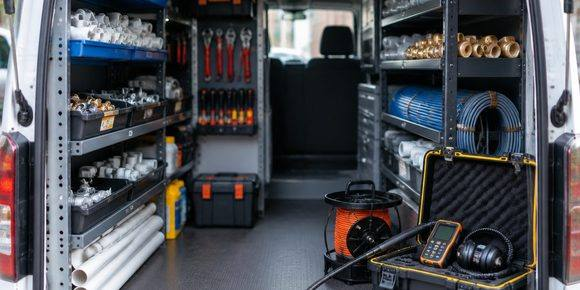

수전 교체부터 난방 배관 점검까지. 장비로 위치를 먼저 찾고 필요한 만큼만 뜯습니다.
고압 세척과 내시경으로 막힌 지점을 확인합니다.

노후 배관을 구간별로 교체합니다.
원인 확인 전 공사 권유 없음.
시공 후 1개월 재점검.
수원 누수탐지 · 배관 · 하수구 막힘. 전화 주시면 40분 안팎에 도착합니다.
진단 후 시공하시면 출장비는 따로 받지 않습니다. 진단만 받으시는 경우 미리 안내드립니다.
우선 집 안 수도 계량기를 확인해 보세요. 모든 물을 잠갔는데 계량기가 돌면 배관 누수 가능성이 큽니다. 바로 연락 주시면 장비로 위치를 찾아 드립니다.
온수배관 수원점은 수원시에서 설비 · 누수 일을 하는 곳입니다. 수원 누수탐지 · 배관 · 하수구 막힘. 전화 주시면 40분 안팎에 도착합니다.